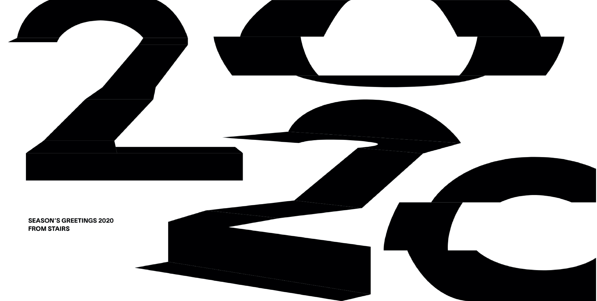

Protocol between Movement and Interface
by Amber Hsuan Lin
March 2021 | Pratt Institute



HOW CAN MEDIATED MOVEMENT WITHIN A SPACE ENLIGHTEN USER INTERFACE DESIGN?
To dislodge, to displace, to flow, to dimensional drift, to morph, to shift, to adduct, to function, to prompt, to act, to make progress. Levels and fragments of the movement – in the transition of gestures, manners, and sensations – can be translated as unique identities and trigger profound narratives. Inspiring and empowering individuality to deliver and bring awareness to their personal significance, movement through mediation allows distinctive interpretations to coexist through juxtaposition.
According to Rem Koolhaas in his book, Delirious New York : A Retroactive Manifesto for Manhattan, he asserts that the primary intent of architecture must include all the performative activities of human occupants within a space (Koolhaas, 1994). Dance, on the other hand, is defined as “the movement of the body in a rhythmic way, usually to music and within a given space” (Britannica).
To inspire, I investigate the processes through which movements can be stimulated, emerged, envisioned, described, preoccupied, deconstructed, or converged. By isolating humans, and their actions, within the constructs of manmade environments, I believe that mediated movement offers a unique opportunity to re-envision interface design by reexamining the interplay between humans and physical spaces.
1. Typology of Interfaces
For me, everything that we can see visually is an interface. Interface, as defined by Merriam Webster, is a surface forming a common boundary of two bodies, spaces, or phase. It is a medium where two parties meet. I imagine interfaces have limitation in directions, so that they are causing human's body movement.
For instance, the elevator itself is an interface, it has two directions - up and down; the car it self is an interface, it has no limitation in directions, we can go wherever we want. In this experimental project, I tried to catergorize the level of restriction in interfaces.
2. To Collect
In this project, I visualize the verb that speaks for the thesis topic - protocol of movement. To collect. Collect five ways of people entering MoMA.
3. Invisible Buttons
A ‘limited-blue-notes’ interface is created for people to play the blues by drawing to create variable outcomes. The interface’s identity system derives from the concept of ‘invisible buttons;’ the purpose is to reconfigure the relationship between music and visuals.